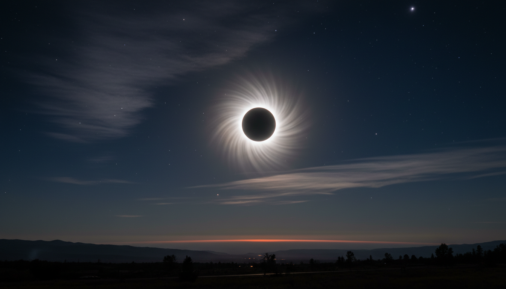

Acesta este proiectul meu despre eclipse, umbră și penumbră la fizică.
Creat de Minciu Andrei Nicolas.
Music track: Wanderer by Walen
Source: Royalty Music
Royalty Free Music for Video (Safe)
Imagini Opera AI
Informații: Wikipedia, Youtube,ChatGPT, Observatorul Astronomic „Amiral Vasile Urseanu”
Publicat cu GitHub.